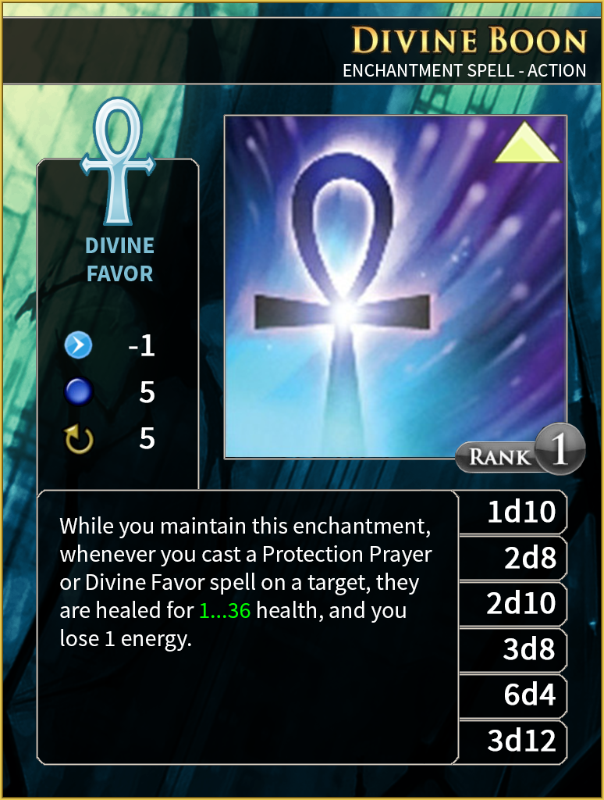

SKILLS

Characters can equip up to eight different skills from either their primary or secondary profession. Only one elite skill can be equipped at a time.

Hover the cursor over sections
of the skill card to read their
descriptions.
of the skill card to read their
descriptions.